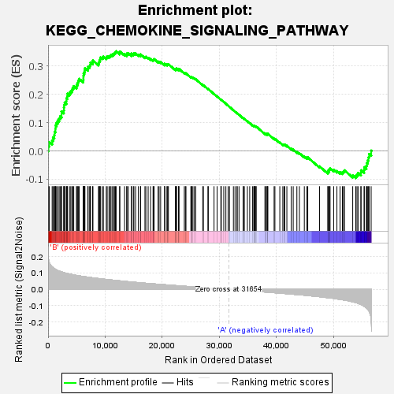
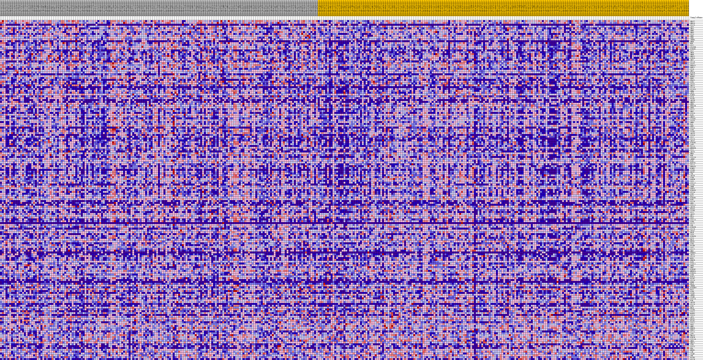
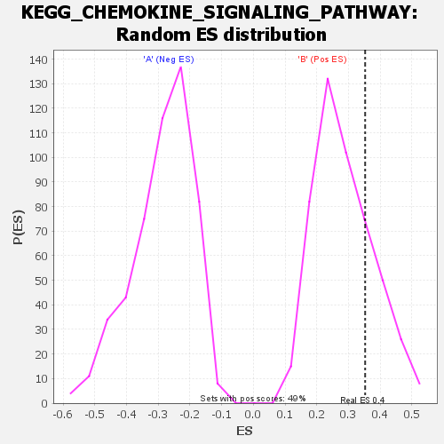

| | | Dataset | my.my.cls#B_versus_A.my.cls#B_versus_A_repos |
| Phenotype | my.cls#B_versus_A_repos |
| Upregulated in class | B |
| GeneSet | KEGG_CHEMOKINE_SIGNALING_PATHWAY |
| Enrichment Score (ES) | 0.35264507 |
| Normalized Enrichment Score (NES) | 1.2343332 |
| Nominal p-value | 0.23469388 |
| FDR q-value | 0.49225995 |
| FWER p-Value | 0.967 |
Table: GSEA Results Summary

Fig 1: Enrichment plot: KEGG_CHEMOKINE_SIGNALING_PATHWAY
Profile of the Running ES Score & Positions of GeneSet Members on the Rank Ordered List
| SYMBOL | TITLE | RANK IN GENE LIST | RANK METRIC SCORE | RUNNING ES | CORE ENRICHMENT | | 1 | GNAI2 | na | 77 | 0.185 | 0.0174 | Yes |
| 2 | GNG10 | na | 214 | 0.164 | 0.0315 | Yes |
| 3 | CCL25 | na | 713 | 0.138 | 0.0366 | Yes |
| 4 | AKT2 | na | 864 | 0.133 | 0.0475 | Yes |
| 5 | SHC3 | na | 1085 | 0.128 | 0.0565 | Yes |
| 6 | GNB5 | na | 1144 | 0.126 | 0.0683 | Yes |
| 7 | GNG3 | na | 1295 | 0.123 | 0.0781 | Yes |
| 8 | CCL3 | na | 1300 | 0.123 | 0.0905 | Yes |
| 9 | GNB1 | na | 1486 | 0.120 | 0.0993 | Yes |
| 10 | CRKL | na | 1679 | 0.116 | 0.1076 | Yes |
| 11 | IKBKG | na | 1935 | 0.112 | 0.1145 | Yes |
| 12 | GNG4 | na | 2114 | 0.110 | 0.1224 | Yes |
| 13 | HCK | na | 2353 | 0.107 | 0.1290 | Yes |
| 14 | CCL2 | na | 2355 | 0.107 | 0.1399 | Yes |
| 15 | STAT5B | na | 2752 | 0.103 | 0.1432 | Yes |
| 16 | PIK3R1 | na | 2777 | 0.103 | 0.1532 | Yes |
| 17 | CCL7 | na | 2797 | 0.103 | 0.1632 | Yes |
| 18 | SHC4 | na | 2915 | 0.101 | 0.1714 | Yes |
| 19 | GNG8 | na | 3210 | 0.099 | 0.1762 | Yes |
| 20 | GNG11 | na | 3213 | 0.099 | 0.1861 | Yes |
| 21 | CCR10 | na | 3364 | 0.097 | 0.1933 | Yes |
| 22 | SHC2 | na | 3400 | 0.097 | 0.2025 | Yes |
| 23 | CCL18 | na | 3753 | 0.094 | 0.2058 | Yes |
| 24 | STAT2 | na | 3972 | 0.093 | 0.2113 | Yes |
| 25 | PRKACA | na | 4181 | 0.091 | 0.2168 | Yes |
| 26 | PREX1 | na | 4306 | 0.090 | 0.2237 | Yes |
| 27 | CCL8 | na | 4495 | 0.089 | 0.2294 | Yes |
| 28 | SHC1 | na | 4962 | 0.086 | 0.2298 | Yes |
| 29 | RAP1B | na | 5087 | 0.085 | 0.2362 | Yes |
| 30 | GNG13 | na | 5208 | 0.084 | 0.2426 | Yes |
| 31 | MAPK1 | na | 5290 | 0.084 | 0.2496 | Yes |
| 32 | PRKX | na | 5463 | 0.083 | 0.2550 | Yes |
| 33 | PF4V1 | na | 6153 | 0.079 | 0.2507 | Yes |
| 34 | CCR1 | na | 6191 | 0.079 | 0.2581 | Yes |
| 35 | STAT1 | na | 6195 | 0.079 | 0.2660 | Yes |
| 36 | GNAI1 | na | 6226 | 0.079 | 0.2734 | Yes |
| 37 | CCL16 | na | 6335 | 0.078 | 0.2794 | Yes |
| 38 | CCL3L3 | na | 6416 | 0.078 | 0.2858 | Yes |
| 39 | GNB4 | na | 6450 | 0.077 | 0.2930 | Yes |
| 40 | AKT3 | na | 6968 | 0.075 | 0.2914 | Yes |
| 41 | PARD3 | na | 7010 | 0.075 | 0.2983 | Yes |
| 42 | CCL4 | na | 7276 | 0.074 | 0.3010 | Yes |
| 43 | PLCB1 | na | 7387 | 0.073 | 0.3064 | Yes |
| 44 | ADCY8 | na | 7431 | 0.073 | 0.3130 | Yes |
| 45 | GNGT1 | na | 7798 | 0.071 | 0.3137 | Yes |
| 46 | GRK5 | na | 7855 | 0.071 | 0.3199 | Yes |
| 47 | PRKACB | na | 8823 | 0.067 | 0.3095 | Yes |
| 48 | GRK4 | na | 8920 | 0.066 | 0.3145 | Yes |
| 49 | CCL17 | na | 8998 | 0.066 | 0.3198 | Yes |
| 50 | GNG2 | na | 9103 | 0.066 | 0.3246 | Yes |
| 51 | CXCL9 | na | 9140 | 0.065 | 0.3305 | Yes |
| 52 | RAF1 | na | 9467 | 0.064 | 0.3312 | Yes |
| 53 | GNGT2 | na | 9685 | 0.063 | 0.3338 | Yes |
| 54 | CX3CR1 | na | 10190 | 0.061 | 0.3310 | Yes |
| 55 | STAT3 | na | 10349 | 0.060 | 0.3343 | Yes |
| 56 | GNB3 | na | 10661 | 0.059 | 0.3348 | Yes |
| 57 | WAS | na | 10868 | 0.058 | 0.3370 | Yes |
| 58 | GRB2 | na | 11019 | 0.058 | 0.3402 | Yes |
| 59 | CXCL6 | na | 11282 | 0.057 | 0.3414 | Yes |
| 60 | CCR5 | na | 11471 | 0.056 | 0.3437 | Yes |
| 61 | CXCR3 | na | 11628 | 0.056 | 0.3466 | Yes |
| 62 | ADCY3 | na | 11792 | 0.055 | 0.3492 | Yes |
| 63 | CXCL8 | na | 11913 | 0.055 | 0.3526 | Yes |
| 64 | XCL2 | na | 12533 | 0.052 | 0.3470 | No |
| 65 | CCL23 | na | 12556 | 0.052 | 0.3519 | No |
| 66 | ADCY2 | na | 13390 | 0.049 | 0.3421 | No |
| 67 | PIK3R5 | na | 13767 | 0.048 | 0.3403 | No |
| 68 | JAK3 | na | 13801 | 0.048 | 0.3445 | No |
| 69 | CCL13 | na | 14040 | 0.047 | 0.3451 | No |
| 70 | NFKBIB | na | 14580 | 0.045 | 0.3401 | No |
| 71 | XCL1 | na | 14593 | 0.045 | 0.3445 | No |
| 72 | ADCY5 | na | 14923 | 0.044 | 0.3431 | No |
| 73 | RHOA | na | 15025 | 0.044 | 0.3457 | No |
| 74 | FGR | na | 15318 | 0.043 | 0.3449 | No |
| 75 | CXCL10 | na | 15812 | 0.041 | 0.3404 | No |
| 76 | ARRB2 | na | 16173 | 0.040 | 0.3381 | No |
| 77 | PAK1 | na | 16214 | 0.040 | 0.3414 | No |
| 78 | MAP2K1 | na | 16959 | 0.038 | 0.3321 | No |
| 79 | CCL11 | na | 17119 | 0.038 | 0.3331 | No |
| 80 | PRKACG | na | 17521 | 0.036 | 0.3296 | No |
| 81 | ELMO1 | na | 17941 | 0.035 | 0.3258 | No |
| 82 | CXCR5 | na | 18380 | 0.034 | 0.3215 | No |
| 83 | DOCK2 | na | 18458 | 0.034 | 0.3235 | No |
| 84 | ITK | na | 18559 | 0.034 | 0.3251 | No |
| 85 | ADCY4 | na | 19259 | 0.032 | 0.3159 | No |
| 86 | CCR8 | na | 19435 | 0.031 | 0.3160 | No |
| 87 | GSK3B | na | 19705 | 0.030 | 0.3143 | No |
| 88 | VAV1 | na | 20346 | 0.029 | 0.3058 | No |
| 89 | CXCL12 | na | 20351 | 0.029 | 0.3087 | No |
| 90 | CXCR1 | na | 20669 | 0.028 | 0.3059 | No |
| 91 | CHUK | na | 20857 | 0.027 | 0.3053 | No |
| 92 | GSK3A | na | 20951 | 0.027 | 0.3064 | No |
| 93 | PIK3CG | na | 21068 | 0.027 | 0.3070 | No |
| 94 | CCL14 | na | 22308 | 0.023 | 0.2874 | No |
| 95 | CCR2 | na | 22332 | 0.023 | 0.2894 | No |
| 96 | RAC2 | na | 22472 | 0.023 | 0.2892 | No |
| 97 | PIK3R3 | na | 22479 | 0.023 | 0.2915 | No |
| 98 | PTK2 | na | 22864 | 0.022 | 0.2869 | No |
| 99 | CCL24 | na | 22865 | 0.022 | 0.2891 | No |
| 100 | GRK1 | na | 22899 | 0.022 | 0.2907 | No |
| 101 | CXCL11 | na | 23848 | 0.019 | 0.2759 | No |
| 102 | ADCY9 | na | 24042 | 0.019 | 0.2743 | No |
| 103 | FOXO3 | na | 24141 | 0.019 | 0.2745 | No |
| 104 | CXCR6 | na | 24992 | 0.017 | 0.2611 | No |
| 105 | CCL1 | na | 25108 | 0.016 | 0.2607 | No |
| 106 | ADCY7 | na | 25166 | 0.016 | 0.2613 | No |
| 107 | RELA | na | 25360 | 0.016 | 0.2595 | No |
| 108 | SOS1 | na | 25614 | 0.015 | 0.2565 | No |
| 109 | CXCL13 | na | 25850 | 0.014 | 0.2538 | No |
| 110 | CCR4 | na | 27076 | 0.011 | 0.2332 | No |
| 111 | CCL27 | na | 27192 | 0.011 | 0.2323 | No |
| 112 | CSK | na | 27986 | 0.009 | 0.2191 | No |
| 113 | PIK3CB | na | 28048 | 0.009 | 0.2189 | No |
| 114 | CCL20 | na | 29051 | 0.006 | 0.2018 | No |
| 115 | CDC42 | na | 29589 | 0.005 | 0.1928 | No |
| 116 | BRAF | na | 30251 | 0.003 | 0.1814 | No |
| 117 | VAV3 | na | 30282 | 0.003 | 0.1812 | No |
| 118 | PIK3CD | na | 30315 | 0.003 | 0.1810 | No |
| 119 | CCL5 | na | 30756 | 0.002 | 0.1734 | No |
| 120 | HRAS | na | 31126 | 0.001 | 0.1670 | No |
| 121 | ROCK2 | na | 31515 | 0.000 | 0.1602 | No |
| 122 | CCR3 | na | 31761 | -0.000 | 0.1559 | No |
| 123 | PLCB4 | na | 32447 | -0.002 | 0.1439 | No |
| 124 | VAV2 | na | 32723 | -0.003 | 0.1393 | No |
| 125 | CCL22 | na | 33062 | -0.003 | 0.1336 | No |
| 126 | GNG7 | na | 33116 | -0.004 | 0.1331 | No |
| 127 | PPBPP1 | na | 33425 | -0.004 | 0.1280 | No |
| 128 | ADCY1 | na | 34138 | -0.006 | 0.1160 | No |
| 129 | CCL15 | na | 34196 | -0.006 | 0.1157 | No |
| 130 | NCF1 | na | 34358 | -0.007 | 0.1135 | No |
| 131 | PRKCB | na | 34892 | -0.008 | 0.1048 | No |
| 132 | WASL | na | 35297 | -0.009 | 0.0986 | No |
| 133 | CX3CL1 | na | 35784 | -0.010 | 0.0910 | No |
| 134 | GRK6 | na | 36007 | -0.011 | 0.0882 | No |
| 135 | GRK7 | na | 36060 | -0.011 | 0.0884 | No |
| 136 | PIK3R2 | na | 36180 | -0.011 | 0.0874 | No |
| 137 | NFKBIA | na | 36221 | -0.011 | 0.0878 | No |
| 138 | PIK3CA | na | 36393 | -0.012 | 0.0860 | No |
| 139 | CCR9 | na | 36421 | -0.012 | 0.0867 | No |
| 140 | RAP1A | na | 37957 | -0.016 | 0.0611 | No |
| 141 | PLCB2 | na | 38162 | -0.016 | 0.0592 | No |
| 142 | CCL19 | na | 38194 | -0.016 | 0.0603 | No |
| 143 | PPBP | na | 38370 | -0.017 | 0.0589 | No |
| 144 | KRAS | na | 38448 | -0.017 | 0.0593 | No |
| 145 | IKBKB | na | 38457 | -0.017 | 0.0609 | No |
| 146 | RASGRP2 | na | 39568 | -0.020 | 0.0432 | No |
| 147 | RAC1 | na | 39710 | -0.021 | 0.0428 | No |
| 148 | CCR6 | na | 40566 | -0.023 | 0.0300 | No |
| 149 | CXCR2 | na | 41093 | -0.024 | 0.0231 | No |
| 150 | ARRB1 | na | 41322 | -0.025 | 0.0216 | No |
| 151 | TIAM1 | na | 41430 | -0.025 | 0.0223 | No |
| 152 | CXCL14 | na | 41802 | -0.026 | 0.0184 | No |
| 153 | PXN | na | 42568 | -0.029 | 0.0077 | No |
| 154 | ADCY6 | na | 42912 | -0.030 | 0.0046 | No |
| 155 | CCL26 | na | 43555 | -0.032 | -0.0035 | No |
| 156 | CCR7 | na | 43998 | -0.033 | -0.0080 | No |
| 157 | NRAS | na | 44857 | -0.036 | -0.0196 | No |
| 158 | CXCR4 | na | 45305 | -0.037 | -0.0238 | No |
| 159 | CXCL1 | na | 45459 | -0.038 | -0.0227 | No |
| 160 | MAPK3 | na | 47515 | -0.045 | -0.0546 | No |
| 161 | CXCL5 | na | 48979 | -0.051 | -0.0754 | No |
| 162 | AKT1 | na | 48994 | -0.051 | -0.0705 | No |
| 163 | ROCK1 | na | 49209 | -0.052 | -0.0691 | No |
| 164 | BCAR1 | na | 49250 | -0.052 | -0.0645 | No |
| 165 | CXCL2 | na | 49364 | -0.052 | -0.0612 | No |
| 166 | SOS2 | na | 49991 | -0.055 | -0.0667 | No |
| 167 | GNB2 | na | 50564 | -0.058 | -0.0710 | No |
| 168 | PRKCD | na | 51114 | -0.061 | -0.0745 | No |
| 169 | PRKCZ | na | 51519 | -0.063 | -0.0753 | No |
| 170 | CCL21 | na | 51714 | -0.065 | -0.0722 | No |
| 171 | JAK2 | na | 51885 | -0.066 | -0.0686 | No |
| 172 | GNAI3 | na | 53328 | -0.076 | -0.0865 | No |
| 173 | PTK2B | na | 53860 | -0.081 | -0.0878 | No |
| 174 | CXCL16 | na | 54073 | -0.083 | -0.0831 | No |
| 175 | GNG5 | na | 54268 | -0.085 | -0.0780 | No |
| 176 | GNG12 | na | 54752 | -0.092 | -0.0772 | No |
| 177 | XCR1 | na | 54789 | -0.093 | -0.0685 | No |
| 178 | CXCL3 | na | 55331 | -0.103 | -0.0677 | No |
| 179 | PF4 | na | 55350 | -0.104 | -0.0575 | No |
| 180 | NFKB1 | na | 55714 | -0.113 | -0.0526 | No |
| 181 | LYN | na | 55811 | -0.115 | -0.0426 | No |
| 182 | TIAM2 | na | 55964 | -0.121 | -0.0330 | No |
| 183 | CRK | na | 56094 | -0.127 | -0.0225 | No |
| 184 | PLCB3 | na | 56203 | -0.133 | -0.0109 | No |
| 185 | CCL28 | na | 56555 | -0.181 | 0.0012 | No |
Table: GSEA details [plain text format]

Fig 2: KEGG_CHEMOKINE_SIGNALING_PATHWAY
Blue-Pink O' Gram in the Space of the Analyzed GeneSet

Fig 3: KEGG_CHEMOKINE_SIGNALING_PATHWAY: Random ES distribution
Gene set null distribution of ES for KEGG_CHEMOKINE_SIGNALING_PATHWAY